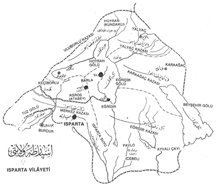
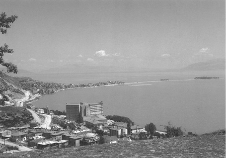
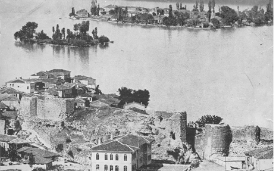
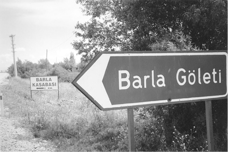
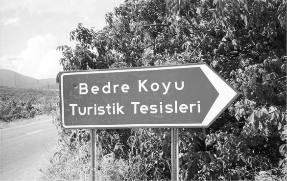
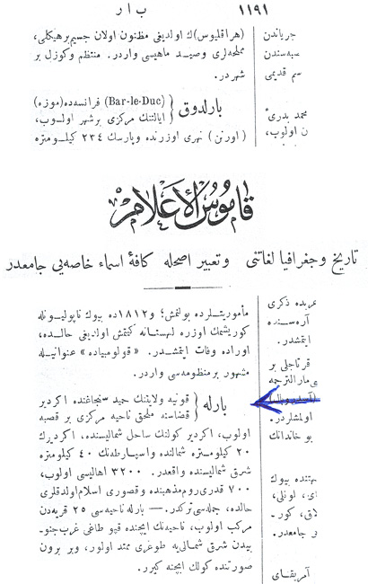
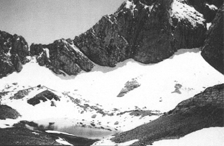
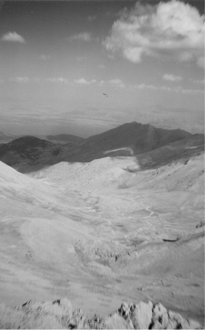
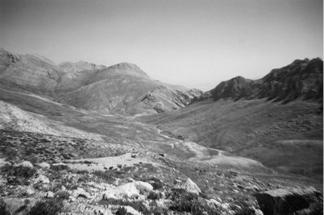

Kaynak Kitaplarda “Barla”

Osmanlı Şehirleri kitabında Atlas’ta: Isparta - Eğirdir - Barla.

Günümüzde Eğirdir-Göl-Can ve Nis Yarımadaları.

Yirminci yüzyılın ilk yarısında Eğirdir-Göl-Can ve Nis Adaları.

Barla Nur Yoluna Devam!
Isparta - Egirdir - Barla Kaynak Kitaplarından Bazıları
Elimde, Nur sevdasının neticesi olarak ‘Aziz Barla’ ile alâkalı çok kıymetli kaynak eserler bulunmaktadır.
Bunlardan ikisi eski, hele bir de el yazması Isparta Tarihi var ki; o da çok daha eski. Ispartalı Ömer Uyar Bey’in gayretleriyle ulaştığım bu kaynak eser için, benim aziz nur kardeşime gönülden sevgi ve dualar ediyorum. Kaynaklardan bazıları:
– “Kuruluşundan Bugüne Kadar Isparta Tarihi (2 Cilt)”, Isparta Eski Meb’us’u Böcüzâde Süleyman Sami (1865-1932). Bugünkü dile çeviren ve yayımlayan: Dr. Suat Seren, Serenler Yayını, İstanbul, 1983 (Ankara Caddesi-Nurlu Merkez Han).
– “Bütün Isparta”, Nuri Katırcıoğlu, Ankara, 1958.
– “Tarihi Kültürel Ekonomik Yönleri İle Eğirdir”, 1.Eğirdir Sempozyumu, 31 Ağustos-1 Eylül 2001.
– “Isparta”, Nuri Katırcıoğlu, 1952; Yazma Eserler Kütüphanesi, Konya Halil Hâmid Paşa Kütüphanesi, kitap no: 20541, tasnif no: 956.15.
Böcüzâde’nin Isparta Tarihi’nden Barla ile alâkalı kısımlardan birisi “Barla Bucağı” başlığı altında verilen bilgilerdir. Bu bilgilerden Böcüzâde’nin eserinden şu satırları okumaktayız:

Nur Köyleri’nden Bedre
Barla Bucağı
Eğridir gölünün kuzeybatısında, iki dağ arasında bulunan Barla nahiyesi, 9 mahalle ve 2 köyden ibaret olup, 638 hanede 2.200 müslüman, 763 hristiyan (= Rum) olmak üzere cem’an 2.960 nüfuslu bir kasabadır.
Bu nahiye halkı öteden beri İstanbul’da yağlıkçılık sanat ve ticaretiyle uğraşır ve arada sırada sılaya gelirler. Erkekleri ve kadınları terbiyeli, evleri ve mobilyaları muntazamdır. Kasabanın havası, suyu, bağ ve bahçeleri güzeldir. Arazisi verimli olmakla beraber, dar olduğundan, ancak kendilerine yetecek kadar ürün alabilirler. Bazen dışarıdan buğday aldıkları da olur. Üzüm, nar ve bademleri boldur. İçecek, bağ ve bahçelerini sulayacak suları, orman ve odunları yeterlidir. Davarcılık ederler. Peynirleri, Mudurnu peynirinden daha nefis, pekmezden yaptıkları sucuk ve köfteleri meşhurdur.
Kadınları bez ve halı dokurlar. Hemen her evde bir tezgâh bulunur. Erkekleri duvarcılık ve dülgerlik için civar köylere ve kasabalara işe giderler.
Nahiyenin bazı yerlerinde iyi tütün yetişir. İlema köylüleri tütüncülük, davarcılık ve sebzecilikle geçinirler. Bedre Köyü halkı, göl kıyısında bulunduklarından balıkçılık da yaparlar. Üzüm bağları güzeldir.
Merkez nahiyede her hafta Cuma günleri pazar kurulur. Ayrıca dükkân yoktur. Yemekleri şehir yemekleri gibidir. Halkı sıhhatli ve gayretlidir.
Eğridir ilçesinin, bütün köyleriyle birlikte, toprak ürünleri buğday, arpa, çok miktarda kumdarı, nohut, mercimek ve mısırdan ibarettir. Pek az afyon ve haşhaş elde edilir. Merkeze bağlı köylerle Pavlu nahiyesinde biraz pamuk ve susam da yetişir. Eğridir, Tepeli ve Cire Köyleri’nde iyi cins patlıcan yetişir. Civar köylere ve kasabalara satarlar.
***
Pavlu’nun Kesme ve Kartoz cihetinde, bir tarafı Karaağaç’ın Yenişar köyüne yanaşan bir küçük gölün etrafı çimenlik ve çiçeklerle kaplıdır. Bu küçük göle Yeşil Göl veya Dip Davras Gölü denir. Kâtip Çelebi’nin kitabında İpsafros diye adı geçen gölün bu gölcük olması muhtemeldir.
Merkez kazadan nahiye ve köylere muntazam yollar yoktur. Bütün yollar hayvanla bile zor geçilir. Totabeli’nin göğe baş çeken çam ağaçları, yol olmadığından taşınıp kereste yapılamamakta, yerlerinde yıkılıp çürümektedir. Bazı köylüler bu çamları yakıp çam sakızı ve katran elde etmektedirler.11
Köylerin hiç birinde hamam yoktur. Doğan çocuklar, soğuk suya atılır. Anaları da soğuk su ile yıkanır. Hastalık ve ölüm olmaz. Hasta yatağı ve ebe yoktur. Kadınları köylü ihtiyar kadınlar doğurturlar.12
Kâmûs-u A’lâm’da “Barla”
Şemseddin Sami Bey’in 1889 tarihinde İstanbul’da basılan Kâmûs-u A’lâm adlı eserinin ikinci cildinin 1191’inci sayfasında Barla ile alâkalı olarak şu satırları okumaktayız:
Barla; Konya vilayetinin Hâmid Sancağı’nda Eğridir Kazasına mülhak nahiye merkezi.
Bir kasaba olup Eğridir Gölü’nün sahil-i şimalinde, Eğirdir’in yirmi kilometre şimalinde ve Isparta’nın kırk kilometre şark-ı şimalinde vâkidir.
3200 ahalisi olup, 700 kadarı Rum mezhebinde ve küsuru islâm oldukları hâlde, cümlesi Türk’tür.
Barla nahiyesi yirmi beş karyeden mürekkep olup, nahiyenin içinde Kabu Dağı garb-ı cenubiyeden şark-ı şimaliye doğru mümted olur.
Ve bir burun suretinde gölün içine girer.

Kâmûs-u A’lâm’da Barla
Barla Dağı (Gelincik Doruğu)

Fotoğraf: Durmuş Uçgun, Geleneksel Etudost Dağcılık Şenliği
Pek çoğumuz tarafından “Barla Dağı” olarak bilinen Gelincik Doruğu, doğusundaki Barla Kasabası ile birlikte anılır. Dağın doğusu Barla kasabası ile Eğirdir gölünün kıyısındadır. Doruğun batı eteğindeki düzlükte Atabey ilçesi yer alır. Dağın doğu-batı transı mümkünken kuzey-güney transı teknik bir rotayı gerektirmemesine karşın dağcılar açısından yeğlenmez. Çünkü dağ kuzeyden güneye bir sırt hattı çizer, doruk ise bu hattın ortasındadır.
Karbonatlı kireç taşı yapısındaki dağın doruğu ve Barla kasabası arasında “Çukur Yayla” adı verilen, yaz aylarında yeşil çimenlerle kaplı güzel bir kamp alanı vardır.
Teknik bir rota gerektirmeyen dağa tırmanış için doruğun doğusundaki Barla kasabasından başlamanızı ve iki gününüzü ayırmanızı öneriyorum. Kış aylarında kazma ve krampon gerekir. Tur kayağı ile geçiş ve alışılmış tırmanış için Durmuş Uçgun ya da Nurtay Yatman’dan ayrıntılı bilgi alınabilir.

Dere Yayla’dan: Gelincik Dağı

Çukur Yayla’dan: Gelincik Dağı
11 Şimdi bütün köylere yol gitmekte, ormanlar fennî şekilde işletilmektedir.
12 Barla’nın eteğinde bulunduğu Barla Dağı’nın Gelincikana tepesi 2. 734 m., Ayıyatağıbaş Tepesi 2.860 m’dir. Birçok kaynaklar bu tepelerden çıkar. Ormanlık ve yaylalıktır. Bedre köyünden açılan 5,5 kilometrelik bir tünelle, Eğridir Gölü’nün suyunu motor gücüyle 84 m. yükselterek, İslâmköy ovasını sulama projesi uygulanmaktadır.